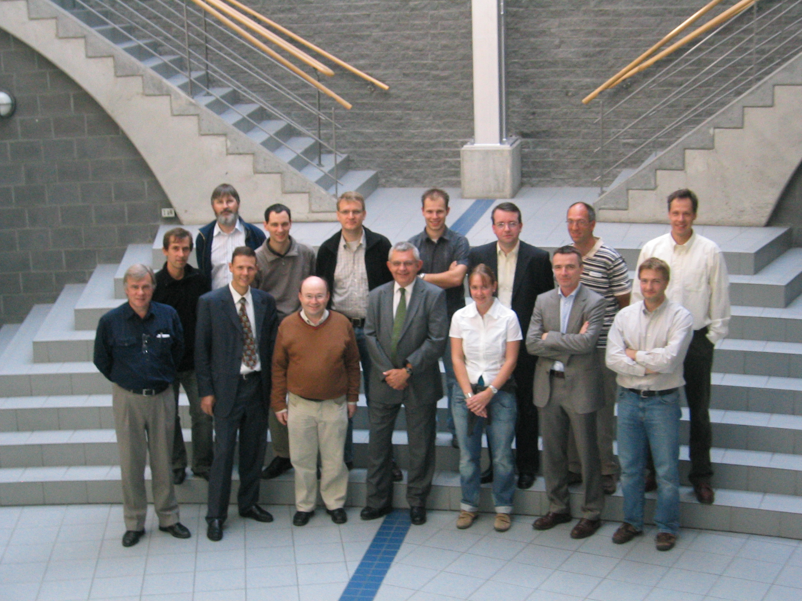

Jan Paredaens with 14 of his scientific children.
Sorting the faces
from left to right, we see: 
Hans Janssens; Bart Kuijpers; Paul De Bra; Peter Peelman; Stijn
Dekeyser; Marc Gyssens; Jan Hidders; Jan Paredaens; Philippe
Michiels; Nele Dexters; Marc Andries; Geert Jan Houben; Marc
Gemis; Toon Calders; Jan Van den Bussche
<br>

